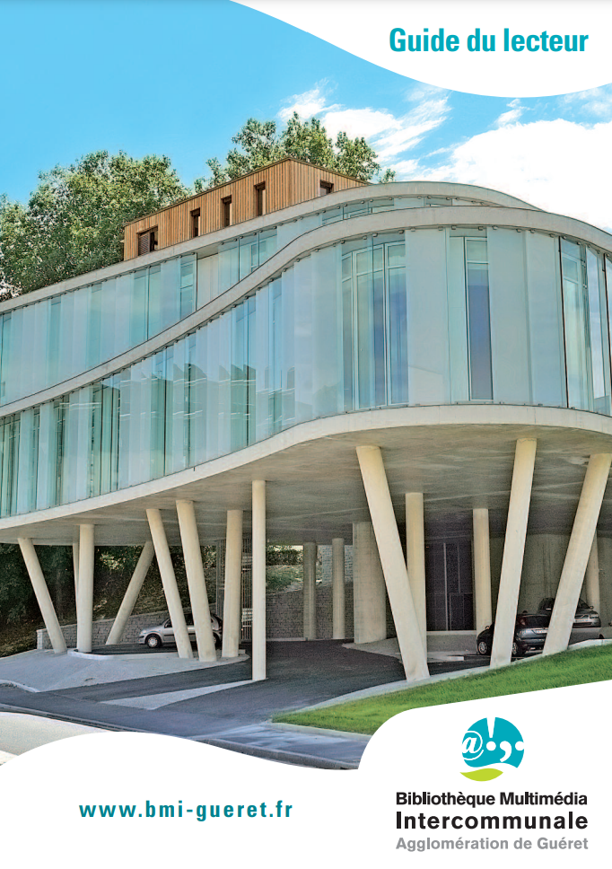
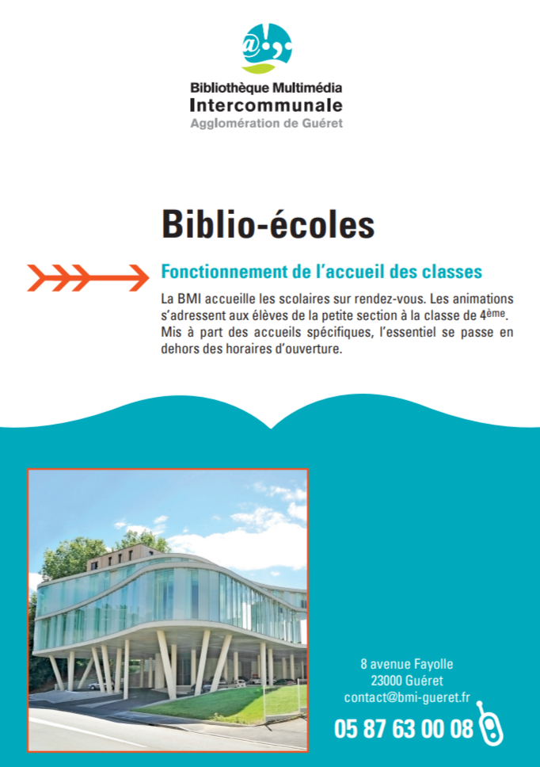

Insérée au cœur d’un complexe culturel et sportif entre l’esplanade Nelson Mandela et la piscine municipale, la Bibliothèque Multimédia du Grand Guéret est le lieu privilégié de la lecture publique et de la culture partagées sur l’agglomération.
Déployée sur 3000m2 avec deux niveaux de lecture publique, le rez-de-chaussée et le 1er étage, elle met gratuitement à disposition de tous, une collection de plus de 135 000 documents dont prés de 81000 livres de lecture publique, 13600 CD, et près de 8300 DVD et Blu-ray ainsi que des journaux et revues… dans tous les grands domaines de la connaissance.
Conçue aussi comme un lieu de rencontres et d’échanges culturels, elle accueille et produit des manifestations en lien avec le livre et la lecture (conférences/débats, lectures, spectacles, projections, expositions…).
|  |  | ACCÈS ET CONTACTBibliothèque Multimédia du Grand Guéret 8 Avenue Fayolle 23000 GUERET Adresse postale : BP 302 23006 GUERET CEDEX Anne-Marie CORCHI Directrice de la Bibliothèque Multimédia du Grand Guéret 05.87.63.00.08 annemarie.corchi@agglo-grandgueret.fr |
SUR LE WEB
bm-grandgueret.fr
Suivez BM News
facebook.com/bmigueret